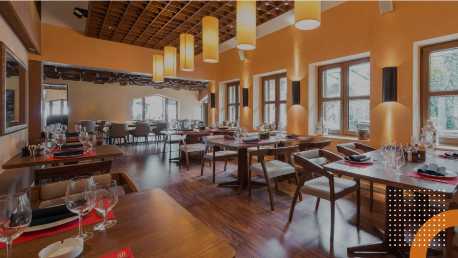
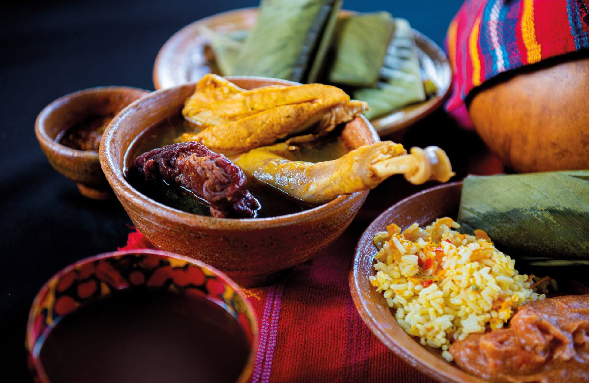
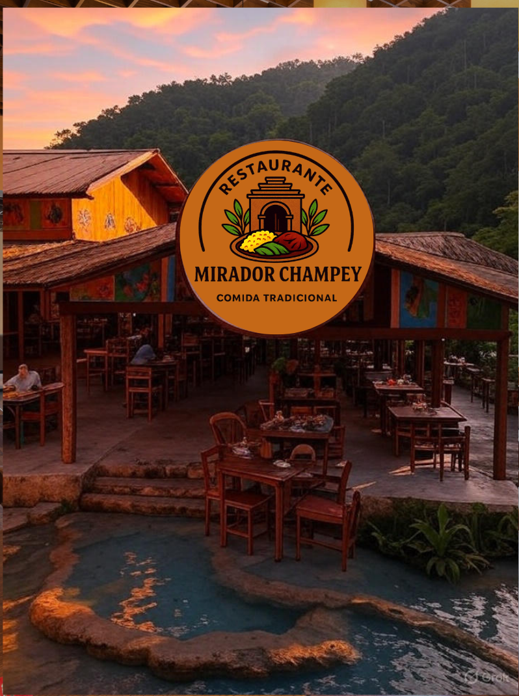

Bienvenido a Mirador Champey
Sabores auténticos de Alta Verapaz con una vista incomparable 🌿
Descubre el Menú
ğŸ Pedido a Domicilio
Disfruta nuestros platillos desde tu hogar. ¡Haz tu pedido por WhatsApp!
📸 Nuestra GalerÃa
Un vistazo al encanto de Mirador Champey en Alta Verapaz.




🌿 Sobre Nosotros
Misión
En Mirador Champey nos dedicamos a rescatar, preservar y compartir la riqueza de la gastronomÃa tradicional de Alta Verapaz y de Guatemala. Nuestro compromiso es elaborar platillos tÃpicos con ingredientes frescos y de calidad, preparados con el mismo cariño y autenticidad que caracterizan a nuestras raÃces. Queremos que cada visita sea una experiencia que una los sabores, la cultura y la hospitalidad de nuestro pueblo, brindando a nuestros clientes un espacio acogedor donde se sientan en familia y puedan disfrutar de la tradición culinaria que nos identifica.
Visión
Ser un restaurante lÃder y referente en comida tradicional guatemalteca, reconocido por promover el orgullo cultural y la riqueza gastronómica de Alta Verapaz a nivel regional, nacional e internacional. Aspiramos a consolidarnos como un punto de encuentro para quienes buscan autenticidad, calidad y calidez en cada plato, contribuyendo al desarrollo turÃstico, económico y cultural de nuestra comunidad, y transmitiendo a las futuras generaciones el valor de nuestras tradiciones.